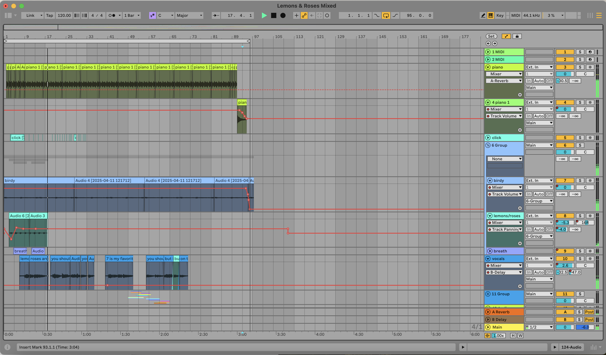

Written: April 1, 2025
Genre: Indie
Vibe: Poem in the margins of your diary
Favorite Line: "But clementine lotuses don't exist // And you know I couldn’t find it // Anything else to rhyme with // Lemons and roses"

My DAW for Lemons & Roses!
PASTE BACKGROUND PARAGRAPH HERE
PASTE SECOND BACKGROUND PARAGRAPH HERE
PASTE THIRD BACKGROUND PARAGRAPH HERE